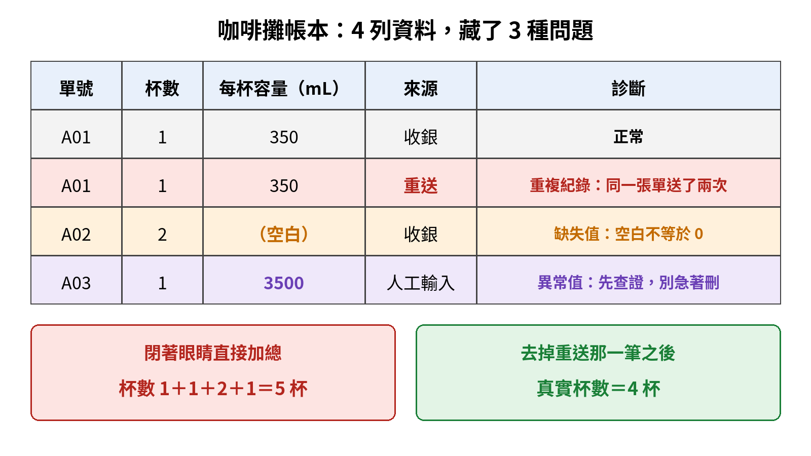
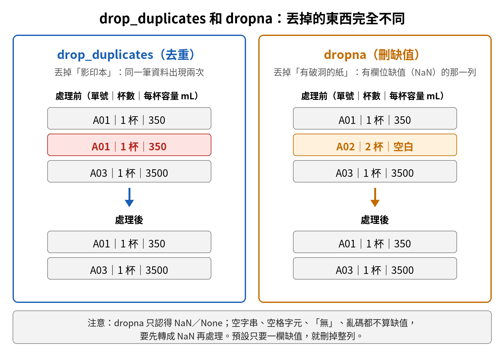
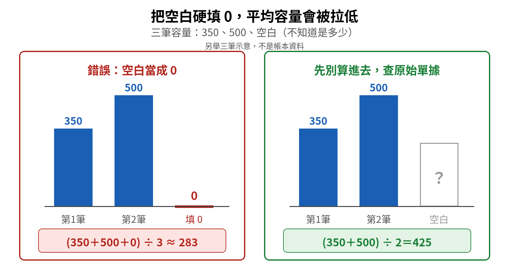
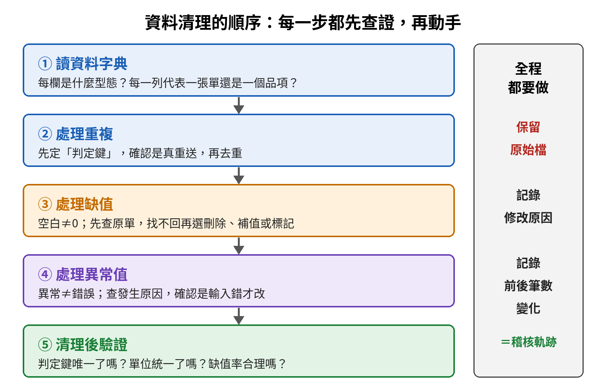
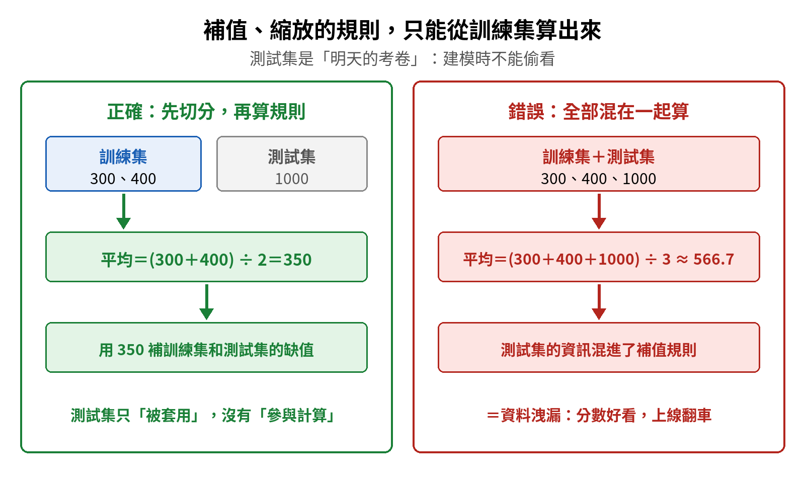

數據收集與清理｜觀念圖解複習
七個要分清楚的觀念，每個都照「為什麼需要它 → 一步步搭起來 → 對照表 → 易錯提醒」整理。先看圖，再讀文字。
本章是強項。 第一輪練習全部答對，所以這頁不是錯題檢討，而是用來維持記憶、分清易混觀念。現在懂了不代表永遠記得，隔幾天回來看一次圖，再自己講一遍，才算真的守住。
單元 ①動手前，先讀懂資料字典與粒度
為什麼需要這個概念？ 錯誤的資料，只會算出非常精準的錯誤答案。拿到一份資料就直接加總、算平均，很容易把不能算的欄位拿去算，或把同一件事算兩次。所以清理的第一步不是刪資料，而是先搞清楚「每一欄是什麼」和「每一列代表什麼」。
一步步搭起來
- 拿一本咖啡攤帳本當例子：老闆想知道今天平均每單賣出幾毫升咖啡，帳本有 4 列，欄位是單號、杯數、每杯容量、來源。注意「每杯容量」是一杯的毫升數，要算每單毫升，得先用杯數 × 每杯容量，不能直接拿容量欄來平均。
- 先認欄位型態：單號像身分證，是類別型，只能拿來辨識，不能加總或算平均；杯數是計數型；每杯容量是連續數值型。
- 再認粒度：每一列代表「一張單」還是「一個品項」？粒度弄錯，後面的去重和加總全部會錯。
- 最後看來源欄：收銀、重送、人工輸入，這些是抓問題的關鍵線索。

| 欄位 | 型態 | 可以做什麼 | 不可以做什麼 |
|---|---|---|---|
| 單號 | 類別型（名目） | 辨識、比對、判斷是否重複 | 加總、算平均 |
| 杯數 | 計數型（離散） | 加總、算平均 | 原始值不該出現小數（如 1.5 杯），出現就查登錄錯誤；平均值有小數屬正常 |
| 每杯容量 | 連續數值型 | 乘上杯數求每單毫升、算平均、看分布 | 單位不一致時直接混算 |
| 來源 | 類別型 | 追查問題從哪裡來 | 當成數字計算 |
單元 ②重複紀錄與 drop_duplicates
為什麼需要這個概念？ 帳本裡有兩筆單號 A01，都是 1 杯、350 mL，一筆來自收銀，另一筆寫著「重送」。系統重送造成同一張單被記了兩次，不處理的話，這 1 杯會被算成 2 杯，總杯數從真實的 4 杯變成 5 杯。
一步步搭起來
- 先找「判定鍵」（Key）：哪幾個欄位一樣，才算同一筆？判定鍵由粒度決定：一列代表一張單，判定鍵就是單號；一列代表一個品項（同一張單點了兩杯不同口味，會記成兩列），判定鍵就要用單號＋品項代碼。
- 確認是真重送：不能只因為名字一樣、時間很近就刪。查來源欄或原始單據，確定是同一筆被送了兩次。
- 再去重：在 pandas 裡用
drop_duplicates。它預設要「所有欄位都一模一樣」才算重複；像這兩筆的來源欄不同，就要用subset指定判定鍵。遇到重複時，keep預設保留第一筆（keep='first'），其餘刪掉。

| drop_duplicates（去重） | dropna（刪缺值） | |
|---|---|---|
| 處理的問題 | 同一筆資料出現兩次以上 | 欄位是空白（缺失） |
| 比喻 | 丟掉一模一樣的影印本 | 丟掉有破洞（某格完全沒寫）的紙 |
| 動手前要確認 | 判定鍵是什麼、是不是真重送 | 缺失原因、刪掉會不會讓樣本偏掉 |
| 處理後的效果 | 避免重複計數 | 避免空白混進計算 |
單元 ③缺失值不是零
為什麼需要這個概念？ 單號 A02 買了 2 杯，每杯容量卻是空白。空白的意思是「不知道是多少」，不是「0 毫升」。如果硬填 0，等於多了一筆假的「零容量」訂單，平均容量會被嚴重拉低。

一步步搭起來
- 先分清楚：這格是「缺失」（沒記到），還是「真的是 0」（例如整單退貨，杯數歸零）？兩者意思完全不同。
- 先查原始單據：能把真實數字找回來最好。
- 找不回來，再依缺失原因選一種處理：刪除該列（dropna）、補值（例如用平均數或中位數，pandas 是
fillna），或保留並加上「缺失」標記欄。
| 處理方式 | 做法 | 適合情況 | 要小心 |
|---|---|---|---|
| 刪除 | dropna 把那一列拿掉 | 缺的筆數很少、屬完全隨機缺失（MCAR） | 刪太多會讓樣本變小；若屬非隨機缺失（MNAR，例如高收入者不填收入），刪除會讓結果偏掉 |
| 補值 | 用平均數、中位數等填入 | 想保留其他欄位的資訊 | 平均數補值會讓資料往平均集中，壓低變異數；補值規則只能用訓練集算（見單元 ⑦） |
| 保留標記 | 另開一欄記「這格原本是缺的」 | 缺失本身可能有意義 | 後續分析要記得處理這個標記 |
選哪種處理，要先判斷缺失機制：MCAR（完全隨機缺失，缺不缺跟任何值都無關）、MAR（隨機缺失，缺不缺跟其他已觀察到的欄位有關）、MNAR（非隨機缺失，缺不缺跟這個值本身有關）。只有 MCAR 時直接刪除比較不會造成偏差。
單元 ④異常值不等於錯誤
為什麼需要這個概念？ 單號 A03 的每杯容量是 3500 mL，比一般一杯大了十倍。直覺會想刪掉，但它可能是人工多打了一個 0，也可能是客人真的訂了一壺派對團體壺。真正少見的極端訂單，常常藏著最重要的商業資訊。
一步步搭起來
- 先發現：數值明顯偏離其他資料，就是異常值（極端值）。常用兩種準則：IQR 準則，小於 Q1−1.5×IQR 或大於 Q3＋1.5×IQR（IQR＝Q3−Q1）；Z 分數準則，|z| > 3。Z 分數適合資料接近常態時用；IQR 不受極端值本身影響，偏態資料比較穩。
- 再查發生原因：看來源欄（這筆是人工輸入）、對照原始單據。
- 依結果處理：確認是輸入錯誤，才修正；確認是真實的特殊訂單，就保留，並加註說明；查不出原因時，先標記，再分別做「含這筆」和「不含這筆」的分析比較結論（敏感度分析）。
| 查證結果 | 處理方式 | 咖啡攤例子 |
|---|---|---|
| 輸入錯誤 | 修正成正確數值，記錄修改原因 | 350 多打一個 0 變成 3500，改回 350 |
| 真實的特殊事件 | 保留，加註說明；必要時另外分析 | 客人真的訂了派對壺，保留 3500 並備註 |
| 查不出原因 | 標記該筆，做含／不含該筆的敏感度分析 | 找不到原始單據，就分別算含 3500 和不含 3500 的結果，看結論會不會變 |
單元 ⑤凡走過必留下痕跡：清理軌跡與清理後驗證
為什麼需要這個概念？ 清理會改動資料。如果沒有留下紀錄，之後別人（或一個月後的自己）根本不知道哪幾筆被刪、哪幾筆被改、為什麼改，結果也就無法被檢查。清理完也不能直接收工，要再驗一次問題真的消失了。

一步步搭起來
- 永遠保留原始檔：清理在副本上做，原始資料不覆蓋。
- 記錄每一次修改：改了什麼、為什麼改、前後筆數怎麼變。這份紀錄就是稽核軌跡。以咖啡攤為例：刪除 1 筆重送，保留 3500 mL 並備註為派對壺，杯數從錯算的 5 杯回到真實的 4 杯。
- 清理後重新驗證：判定鍵是否唯一了？容量單位統一了嗎？缺值率合理嗎？
| 驗證項目 | 要問的問題 | 對應的清理動作 |
|---|---|---|
| 唯一性 | 判定鍵還有重複嗎？ | 去重 |
| 一致性 | 單位、格式統一了嗎？ | 格式與單位轉換 |
| 完整性 | 缺值率在合理範圍嗎？ | 缺值處理 |
| 筆數變化 | 前後筆數差多少？說得出原因嗎？ | 對照稽核軌跡 |
單元 ⑥資料多不等於準：抽樣代表性與資料品質
為什麼需要這個概念？ 就算每一筆都清得很乾淨，如果收集的方式本身就偏了，結論一樣會錯。例如只在平日上午收集顧客資料，樣本沒有涵蓋假日客群（選樣偏差），資料再多，推論也會系統性偏誤。
一步步搭起來
- 先問「我想推論的是誰」：這群人就是母體。想了解所有顧客，母體就包含平日和假日、上午和晚上。
- 再看樣本有沒有對應母體：抽樣的時間、地點、管道，是否涵蓋了母體裡的各種人。
- 最後檢查資料品質：用下面常見的六個維度逐一檢查（各教材列法略有不同）。
| 品質維度 | 意思 | 咖啡攤例子 |
|---|---|---|
| 完整性 | 該填的欄位都有填 | 容量欄沒有空白（但填滿不代表填對） |
| 正確性 | 內容符合事實 | 3500 mL 是真的派對壺，不是打錯 |
| 有效性 | 值符合格式、範圍、規則 | 杯數是正整數、每杯容量在合理範圍、日期格式正確 |
| 一致性 | 不同來源的格式、單位統一 | 各分店的容量都用 mL，不混用其他單位 |
| 唯一性 | 沒有重複紀錄 | 同一張單只出現一次 |
| 時效性 | 資料沒有過期 | 用的是最近的銷售紀錄 |
單元 ⑦資料洩漏：補值、縮放只能用訓練集
為什麼需要這個概念？ 模型評估的目的，是模擬「拿到沒看過的新資料時表現如何」。測試集就是明天的考卷。如果建模時偷看了測試集或未來的資訊，考場上看起來考 100 分，真的上線就翻車。這種偷看叫做資料洩漏。
一步步搭起來
- 第一種偷看：用了預測當下還不知道的資訊。例如要預測明天的銷量，卻把明天的真實天氣或成交結果當成特徵放進模型。鐵則：特徵只能用預測「當下已知」的資料。
- 第二種偷看：前處理的規則混進了測試集。補值要用的平均數、標準化要用的平均和標準差、縮放要用的最大最小值，都是從資料「學」出來的數字。
- 正確順序：先切分訓練集和測試集，再只用訓練集算出規則，最後把同一套規則套用到測試集。

| 正確做法 | 錯誤做法 | |
|---|---|---|
| 用哪些數字算平均 | 只用訓練集：300、400 | 訓練集加測試集：300、400、1000 |
| 算出的補值 | (300＋400) ÷ 2＝350 | (300＋400＋1000) ÷ 3 ≈ 566.7 |
| 測試集的角色 | 只被套用規則，沒參與計算 | 提前參與了規則的計算 |
| 評估結果 | 公平，能反映真實表現 | 偏樂觀，上線後落差大 |
不需要從資料「學」任何數字的處理，例如統一日期格式、改正明顯的錯字，可以在切分前先做；只要會算出平均、標準差、最大最小值這類數字的處理，就一定要等切分後只用訓練集算。
還有兩個順序也跟洩漏有關：去重要在切分訓練集和測試集之前做，否則同一筆資料可能同時出現在兩邊，等於考前看過考題；時間序列要依時間切分，用較早的資料訓練、較晚的資料測試，不能隨機打亂，否則模型會偷看到未來。
總整理本章要記的八句話
- 動手清理前先讀資料字典：每欄是什麼型態、每一列代表什麼（粒度）。
- 編號是類別資料，看起來是數字也不能加總或算平均。
- 重複紀錄 → 先定判定鍵、確認是真重送，再 drop_duplicates。
- 缺失值 → 空白不等於 0；先查原單，找不回再選刪除（dropna）、補值或標記。
- 異常值 → 異常不等於錯誤；先查原因，確認是輸入錯誤才改。
- 清理全程保留原始檔、記錄修改原因與前後筆數；清完再驗唯一性、單位與缺值率。
- 資料多不等於準：樣本要對應母體，否則資料再多偏差也不會消失；品質常看完整、正確、有效、一致、唯一、時效六個維度。
- 補值、標準化、縮放的規則只能從訓練集算；特徵只能用預測當下已知的資料，否則就是資料洩漏。